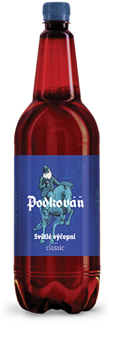

Pivo
Přemýšleli jste někdy nad tím: Co je zapotřebí k tomu, abyste získali to nejlepší
pivo? Jaké je na chuť, to nejlahodnější, to nejopravdovější?
Odpověď je nasnadě: V pivu je hlavní voda, z něhož se vaří. (Není žádným
tajemstvím, že naše voda je jedničkou na českém trhu.)
-
 Podkováň KARAMEL, pivo výčepní tmavé se sladidlem
Podkováň KARAMEL, pivo výčepní tmavé se sladidlem
Alc 4.0% -
 Podkováň LAGER, pivo světlý ležák
Podkováň LAGER, pivo světlý ležák
Alc 4.7% -
 Podkováň LAGER, pivo světlý ležák
Podkováň LAGER, pivo světlý ležák
Alc 4.0% -
Podkováň PREMIUM, pivo světlý ležák
Alc 5.0% -
 Podkováň LAGER, pivo světlý ležák
Podkováň LAGER, pivo světlý ležák
Alc 4.7% -
 Podkováň CLASSIC, pivo světlé výčepní
Alc 4.0% -
 Podkováň KARAMEL, pivo výčepní tmavé se sladidlem
Podkováň KARAMEL, pivo výčepní tmavé se sladidlem
Alc 4.0% -
 Podkováň PREMIUM, pivo světlý ležák
Podkováň PREMIUM, pivo světlý ležák
Alc 5.0%


Na druhém místě je čistota. (Pucujeme, leštíme, po vaření ručně drhneme a
myjeme naše měděné varny, whirpool, spilky a tanky ve sklepě.)
Na třetím místě je pak slad a chmel (prostě kupujeme ty nejlepší).
Ve spolupráci a pod kontrolou těch nejlepších českých pivovarnických mistrů
(https://www.czechbrewmasters.com/) Vám chceme zprostředkovat chuť poctivého českého piva, jehož historie se začala odvíjet před 600 lety.